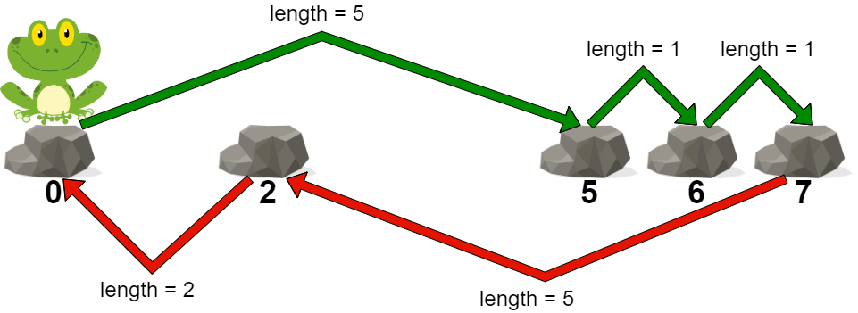
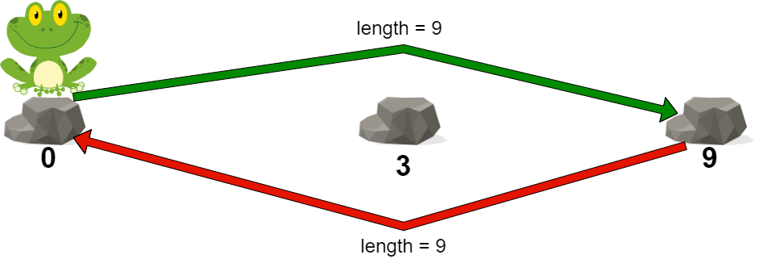

| Category | Difficulty | Likes | Dislikes |
|---|---|---|---|
| Algorithms | Medium | 851 | 127 |
array | binary-search | greedy
microsoft | google
You are given a 0-indexed integer array stones sorted in strictly increasing order representing the positions of stones in a river.
A frog, initially on the first stone, wants to travel to the last stone and then return to the first stone. However, it can jump to any stone at most once.
The length of a jump is the absolute difference between the position of the stone the frog is currently on and the position of the stone to which the frog jumps.
stones[i] and is jumping to stones[j], the length of the jump is |stones[i] - stones[j]|.The cost of a path is the maximum length of a jump among all jumps in the path.
Return the minimum cost of a path for the frog.
Example 1:

Input: stones = [0,2,5,6,7]
Output: 5
Explanation: The above figure represents one of the optimal paths the frog can take.
The cost of this path is 5, which is the maximum length of a jump.
Since it is not possible to achieve a cost of less than 5, we return it.Example 2:

Input: stones = [0,3,9]
Output: 9
Explanation:
The frog can jump directly to the last stone and come back to the first stone.
In this case, the length of each jump will be 9. The cost for the path will be max(9, 9) = 9.
It can be shown that this is the minimum achievable cost.
Constraints:
2 <= stones.length <= 1050 <= stones[i] <= 109stones[0] == 0stones is sorted in a strictly increasing order.